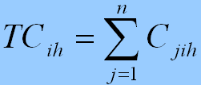
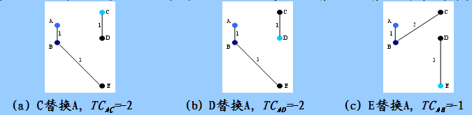
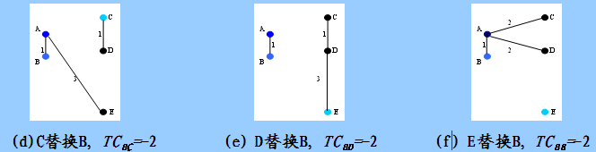

Data Mining 笔记聚类k-medoids
一、概述
k-means利用簇内点的均值或加权平均值ci（质心）作为类Ci的代表点。对数值属性数据有较好的几何和统计意义。对孤立点是敏感的，如果具有极大值，就可能大幅度地扭曲数据的分布.
k-medoids(k-中心点)算法是为消除这种敏感性提出的，它选择类中位置最接近类中心的对象(称为中心点)作为类的代表点，目标函数仍然可以采用平方误差准则。
PAM（Partitioning Around Medoids，围绕中心点的划分）是最早提出的k中心点算法之一。
二、算法思想：
随机选择k个对象作为初始的k个类的代表点，将其余对象按与代表点对象的距离分配到最近的类；反复用非代表点来代替代表点，以改进聚类质量。 即：算法将判定是否存在一个对象可以取代已存在的一个中心点。
- 通过检验所有的中心点与非中心点组成的对，算法将选择最能提高聚类效果的对，其中成员总是被分配到与中心点距离最短的类中。
- 假设类Ki 的当前中心点是Oi , 希望确定Oi是否应与非中心点Oh交换.如果交换可以改善聚类的效果，则进行交换。
距离代价的变化是指所有对象到其类中心点的距离之和的变化，这里使用Cjih表示中心点Oi与非中心点Oh交换后，对象Oj到中心点距离代价的变化。
总代价定义如下：

三、算法描述：
输入：
簇的数目k和包含n个对象的数据库。
输出：
k个簇的集合
方法：
任意选择k个对象作为初始的代表对象（簇中心点）
repeat
将每个剩余对象指派到最近的代表对象所代表的簇
随机地选择一个非代表对象Orandom
计算用Orandom交换代表对象Oi的总代价S
if S < 0，then用Orandom替换Oi ，形成新的k个代表对象的集合
UNTIL不发生变化
四、算法实例
| 样本点 | A | B | C | D | E |
|---|---|---|---|---|---|
| A | 1 | 2 | 2 | 3 | |
| B | 1 | 2 | 4 | 3 | |
| C | 2 | 2 | 1 | 5 | |
| D | 2 | 4 | 1 | 3 | |
| E | 3 | 3 | 5 | 3 |
第一步 建立阶段：
假如从5个对象中随机抽取的2个中心点为{A，B},则样本被划分为{A、C、D}和{B、E}
第二步 交换阶段：
假定中心点A、B分别被非中心点C、D、E替换，根据PAM算法需要计算下列代价TC(AC)、 TC(AD)、 TC(AE)、TC(BC)、TC(BD)、 TC(BE)。
我的注解：即要尝试本聚类内部的C替换A、D替换A、E替换B以外；还要尝试用其他簇内的对象来替换现有考察的中心点。即E替换A，C替换B，D替换B。
计算每个代价的过程也是比较繁琐的，以计算C替换A的代价TC(AC)为例说明计算过程。
- 当A被C替换以后，A不再是一个中心点，因为A离B比A离C近，A被分配到B中心点代表的簇，C(AAC)=d(A,B)-d(A,A)=1
- B是一个中心点，当A被C替换以后，B不受影响，C（BAC)=0
- C原先属于A中心点所在的簇，当A被C替换以后，C是新中心点，符合PAM算法代价函数的第二种情况C(CAC)=d(C,C)-d(C,A)=0-2=-2
- D原先属于A中心点所在的簇，当A被C替换以后，离D最近的中心点是C，根据PAM算法代价函数的第二种情况C(DAC)=d(D,C)-d(D,A)=1-2=-1
- E原先属于B中心点所在的簇，当A被C替换以后，离E最近的中心仍然是 B，根据PAM算法代价函数的第三种情况C(EAC)=0
因此，TC(AC)=C(AAC)+ C(BAC)+ C(cAC)+ C(DAC)+ C(EAC) =1+0-2-1+0=-2。 即该替换方案下每个点的影响的代价和。
在上述代价计算完毕后，我们要选取一个最小的代价，显然有多种替换可以选择，我们选择第一个最小代价的替换（也就是C替换A），根据图（a）所示，样本点被划分为{ B、A、E}和{C、D}两个簇。图（b）和图（c）分别表示了D替换A，E替换A的情况和相应的代价，图（d）、（e）、（f）分别表示了用C、D、E替换B的情况和相应的代价。

替换中心点A

..替换中心点B
通过上述计算，已经完成了第一次迭代。在下一迭代中，将用其他的非中心点{A、D、E}替换中心点{B、C}，找出具有最小代价的替换。一直重复上述过程，直到代价不再减小为止。
五、算法总结
优点
- 对属性类型没有局限性
- 通过簇内主要点的位置来确定选择中心点，对孤立点和噪声数据的敏感性小
不足
- 处理时间要比k-mean更长
- 用户事先指定所需聚类簇个数k
- 发现的聚类与输入数据的顺序无关
我的注解： 因为考察选择每个新中心点时候，不像k-mean一样，算下均值即可，需要依次考察每当前非中心点，并计算每种置换方案的总代价。算法比k-mean负责，计算时间也长。和k-mean一样。都是需要事先指定簇的个数。
其实这也是基于划分的共同特征。
五、基于划分的聚类算法总结
特点
- k事先定好
- 创建一个初始划分，再采用迭代的重定位技术
- 不必确定距离矩阵
- 比系统聚类法运算量小，适用于处理庞大的样本数据
- 适用于发现球状类
缺陷
- 不同的初始值，结果可能不同
- 有些k均值算法的结果与数据输入顺序有关，如在线k均值算法
- 容易陷入局部极小值
参考：
完。